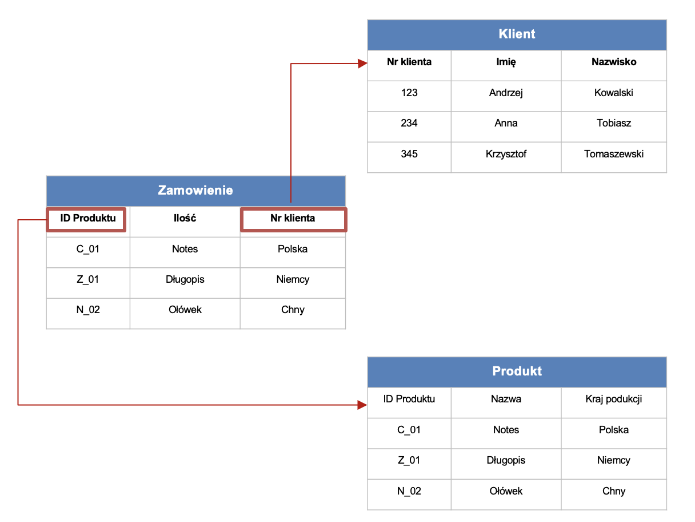

2.1 Potoki danych
Na typową architekturę IT składają się producenci danych, ich konsumenci i system je przetwarzające.

Kluczowe pytania, na które warto odpowiedzieć projektując architekturę IT, to:
- Skąd pozyskamy dane?
- W jaki sposób je pozyskamy? W jaki sposób będziemy je przetwarzać? Jak je będziemy gromadzić?
- Dokąd te dane później trafią?
Najważniejsze powody, dla których warto projektować architektury IT, to:
- Rozwiązanie klasycznych problemów z danymi, takich jak:
- zmieniające się schematy baz i scenariusze użycia
- rosnąca ilość danych
- błędy w danych
- duplikacja danych
- wycieki danych
- opóźnienia (latencja)
- awarie w procesach
- konieczność manualnego zarządzania procesami IT.
- Integracja silosów informacyjnych często obecnych w firmach (osobne systemy wspomagające komunikację, zarządzanie różnymi obszarami działania, etc.)
2.1.1 Typy danych
Najważniejsze typy danych, które napotkamy w projektach uczenia maszynowego, to:
- Dane o zdarzeniach, obiektach i ich agregaty
- Dane ustrukturyzowane, nieustrukturyzowane i częściowo-ustrukturyzowane.

Dane o obiektach (ang. entity data) przedstawiają najczęściej stan obiektu, np. użytkownika, produktu, zamówienia.

Dane o zdarzeniach (ang. event data) opisują działania wykonywane przez (lub na) obiektach.

Najbardziej typowe cechy takich zdarzeń to:
- identyfikator
- typ zdarzenia
- znacznik czasu
- informacje uzupełniające.
Warto podkreślić, że współczesne systemy generują zdecydowanie więcej danych o zdarzeniach niż danych o podmiotach (na każdego użytkownika korzystającego z aplikacji mogą przypadać tysiące zdarzeń).
Dane o zdarzeniach mogą być agregowane np. w celu analiz biznesowych (np. KPIs). Przykładowo, często wykorzystywane w biznesie miary będące wynikiem agregacji danych o obiektach i wydarzeniach to:
- Liczba aktywnych użytkowników Dzienni aktywni użytkownicy (DAU) Tygodniowi aktywni użytkownicy (WAU) Miesięczna liczba aktywnych użytkowników (MAU)
- Długość sesji Czas spędzony przez użytkownika korzystającego z Twojej aplikacji podczas jednej sesji.
- Współczynnik kliknięć (CTR) Stosunek liczby użytkowników, którzy kliknęli na reklamę lub banner do liczby użytkowników, którzy obejrzeli stronę z tą reklamą lub bannerem.
- Współczynnik odrzuceń (BR) Procent użytkowników opuszczających witrynę po obejrzeniu tylko jednej strony.
- Współczynnik konwersji (CR) Procent użytkowników, którzy wykonują pożądaną akcję.
Relację pomiędzy danymi o zdarzeniach i obiektach można podsumować następująco:

Kolejną istotną w uczeniu maszynowym charakterystyką danych jest ich podział na dane ustrukturyzowane, częściowo-ustrukturyzowane i nieustrukturyzowane.

Dane ustrukturyzowane:
- Są uporządkowane w tabelach
- Można określić między nimi relacje
- Można odpytywać korzystając z języka SQL (Structured Query Language)
- Wymagają wskazania schematu (Schema): sposobu organizacji danych.
Dane częściowo-ustrukturyzowane:
Nie są zgodne z relacyjnymi bazami danych, takimi jak Excel czy SQL, ale mają pewien poziom organizacji, np. znaczniki.
Nie są ściśle relacyjne
Po przetworzeniu mogą być przechowywane w:
- relacyjnych bazach danych
- bazach NoSQL
- plikach CSV, XML i JSON.
Dane nieustrukturyzowane:
Najczęściej dane jakościowe
Nie posiadają schematu/modelu, czy też relacji
Można je składować w bazach NoSQL i jeziorach danych
Przykłady: pliki audio, video, dokumenty tekstowe, wpisy na forach dyskusyjnych, etc.
2.1.2 Bazy danych
Technologie gromadzenia danych powinny być dostosowane do ich typu.

2.1.2.1 Bazy SQL
Dane ustrukturyzowane
- Uporządkowane w tabelach
- Można określić między nimi relacje
- Można odpytywać językiem SQL (Structured Query Language)
- Wymagają wskazania schematu (Schema): sposobu organizacji danych
- W efekcie, gromadzimy najczęściej w bazach SQL.
Kluczową technologią w tego typu systemach jest OLTP (OnLine Transaction Processing).
Przykładowe bazy SQL: Oracle, MS SQL Server, MySQL, PostgreSQL
Przykładowe zastosowania: systemy finansowe, transakcyjne, ERP, etc.
2.1.2.2 Bazy NoSQL
Bazy NoSQL służą do przechowywania danych nieustrukturyzowanych.
Wyróżniamy 4 podstawowe typy baz NoSQL.
- Bazy zorientowane na dokumenty
- Bazy kolumnowe
- Bazy oparte o wartości kluczy (key-value)
- Bazy grafowe.

Bazy zorientowane na dokumenty:
- Nie posiadają ustalonego schematu
- Dane składowane w dokumentach JSON (JavaScript Object Notation)
- Każdy dokument może mieć inny zestaw pól
- Przykładowe bazy: MongoDB, CouchDB, DocumentDB
- Przykładowe zastosowania: systemy zarządzania dokumentami.

Bazy kolumnowe
- Dane składowane są w nich w kolumnach (nie w wierszach)
- W efekcie, operacje (zapytania, dodawanie, kasowanie, etc.) oparte na kolumnach działają w nich bardzo szybko
- Przykładowe bazy: Cassandra
- Przykładowe zastosowania: zaawansowane analizy danych.

Bazy oparte o wartości kluczy (key-value)
- Każdy wpis ma w nich unikatowy klucz
- Efekt: umożliwiają szybszy zapis i odczyt danych
- Przykładowe bazy: Redis, Amazon Dynamo DB
- Przykładowe zastosowania: opinie klientów.

Bazy grafowe
Dane skladowane w formie sieci
Koncentracja na połączeniach (relacjach) pomiędzy punktami (obiektami)
Wykorzystywane w analizach relacji
Przykładowe bazy: Neo4j, Inifinite Graph
Przykładowe zastosowania: analiza sieci społecznych.
2.1.3 Hurtownie danych
Bazy danych, oparte na technologii OLTP (OnLine Transaction Processing) są zaprojektowane w celu zapewnienia efektywnego działania systemów transakcyjnych. Ich celem nie jest optymalizacja analityki
Hurtownie danych:
- oparte są o technologie OLAP (Online Analytical Processing), wspomagające użytkowników w interaktywnej analizie wielowymiarowych danych, w szczególności:
- Konsolidacji (grupowania)
- Drążenia (drill-down)
- Przekrojów danych
- Hurtownie danych wykorzystują dane zgromadzone w bazach danych (OLTP), tworząc warstwę zoptymalizowaną pod kątem zastosowań analitycznych.
W efekcie, hurtownie danych integrują dane z różnych źródeł, będąc często centralnym repozytorium informacji zoptymalizowane pod kątem analityki biznesowej.
Źródłami danych dla hurtowni danych są różne systemy transakcyjne i inne bazy danych.
Główne zalety i korzyści ze stosowania hurtowni danych to:
- Konsolidacja danych w jednym miejscu
- Szybsze analizy biznesowe
- Ułatwione procesy transformacji i wzbogacania danych oraz inżynierii cech
- Poprawa jakość danych.
Wady i ograniczenia hurtowni danych:
- Mogą być kosztowne
- Wymagają ciągłej opieki (czyszczenie, transformacja, integracja danych, …)
- Bywają zbyt złożone w przypadku doraźnych potrzeb analitycznych.
Hurtownie danych warto stosować w danej organizacji:
- Jest wiele rozproszonych baz danych/systemów dziedzinowych
- Jest wiele różnych baz danych
- Jest gromadzona duża ilość danych historycznych.